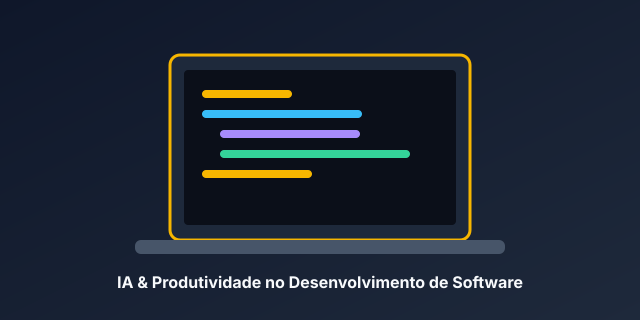
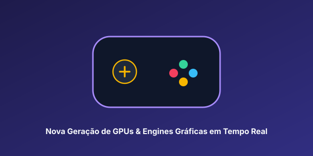
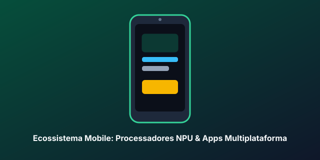
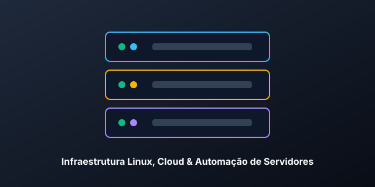

Como a Inteligência Artificial e o Python estão transformando o Desenvolvimento Web
Postado em 06 de novembro de 2026 • Por João Pedro Araujo

A integração de assistentes de Inteligência Artificial e scripts de automação em Python consolidou um novo padrão de produtividade para equipes de engenharia de software. Tarefas repetitivas de coleta de dados, geração de relatórios e validação de APIs agora são executadas em segundos.
Além da automação de back-end, o uso combinado de bancos de dados relacionais bem modelados (como MySQL com Triggers e Stored Procedures) garante que aplicações web mantenham alta integridade e desempenho mesmo sob grande volume de acessos simultâneos.
Jogos
Nova geração de GPUs e Ray Tracing em tempo real: o que muda para os gamers e devs
Postado em 04 de novembro de 2026 • Por Redação TecBlog

As novas arquiteturas gráficas trouxeram avanços expressivos em renderização neural e reconstrução de quadros via IA, permitindo taxas de atualização estáveis em 4K mesmo em títulos de mundo aberto exigentes.
Para desenvolvedores que utilizam motores modernos como Unreal Engine 5 e Godot, as novas APIs gráficas reduzem gargalos de CPU e facilitam a criação de iluminação global dinâmica sem comprometer a performance em PCs intermediários.
Celulares & Mobile
Smartphones com NPU dedicada e o crescimento de apps multiplataforma com Flutter
Postado em 01 de novembro de 2026 • Por João Pedro Araujo

Os processadores móveis atuais contam com unidades de processamento neural (NPUs) capazes de executar modelos de linguagem e visão computacional diretamente no aparelho, sem depender exclusivamente da nuvem.
No desenvolvimento mobile, frameworks como o Flutter (Dart) continuam liderando a criação de interfaces fluidas a 120Hz com código único para Android e iOS, além de excelente suporte a persistência local de dados.
Eletrônicos & Infraestrutura
Mini PCs e Servidores Domésticos com Linux Ubuntu: monte seu laboratório de estudos
Postado em 28 de outubro de 2026 • Por João Pedro Araujo

Montar um Home Lab utilizando Mini PCs de baixo consumo energético com Linux Ubuntu Server tornou-se uma das melhores formas práticas de estudar redes, bancos de dados MySQL e deploy de aplicações web.
Com menos de 15W de consumo, é possível manter serviços rodando 24/7 para hospedar bancos de dados de estudo, rotinas automatizadas em Python (via Cron) e servidores de desenvolvimento locais.